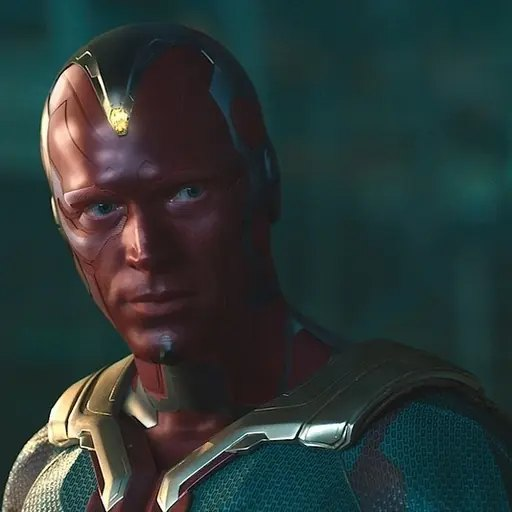
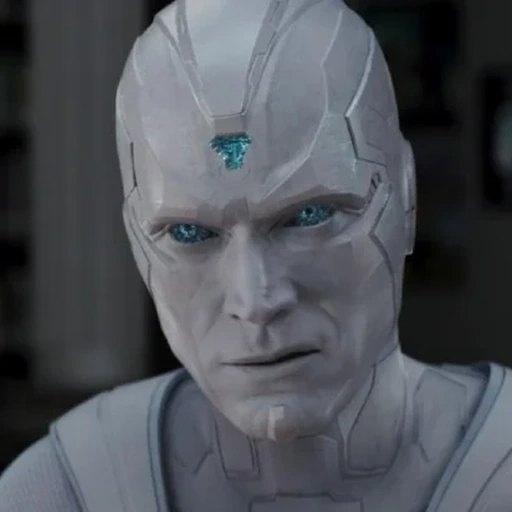

Почему Мстители позволили разобрать Вижна на запчасти?
Мстители пытались спасти Вижна от Таноса. Но уже после «Финала» его разобранное тело оказалось в лаборатории М.Е.Ч. Почему никто не помешал этому — и правда ли Вижн принадлежал Тони Старку?

Никто не показал, что Мстители согласились на разборку. Мы знаем только, что тело Вижна оказалось у М.Е.Ч., а директор Хейворд использовал его для создания Белого Вижна. Ни правовое основание передачи, ни осведомлённость других героев сериал не устанавливает.
Мог ли Старк владеть Вижном?
Тело Вижна появилось в результате технологий Альтрона и Хелен Чо, развития системы Д.Ж.А.Р.В.И.С. Тони Старком и Брюсом Бэннером и вмешательства Тора с Камнем Разума. Однако технология происхождения не равна праву собственности на разумную личность.
Вижн способен самостоятельно принимать моральные решения, вступает в отношения с Вандой, спорит с создателями и даже противостоит им. Поэтому утверждение «он принадлежал Тони» противоречит тому, как персонажа показывает сама КВМ.
Что именно происходило в лаборатории?
В восьмой серии «Ванда/Вижн» Ванда видит, как сотрудники М.Е.Ч. демонтируют тело Вижна. Директор Тайлер Хейворд называет его опасным разумным оружием, утверждает, что ведомство выполняет юридический долг, и оценивает вибраниум в три миллиарда долларов.
Это слова персонажа с собственными интересами, а не документ, подтверждающий законные права организации. Позднее выясняется, что М.Е.Ч. тайно работал над новой версией Вижна — Белым Вижном.

Почему Ванда не спасла останки?
Ванда пришла за телом, надеясь похоронить любимого. Хейворд ограничил ей доступ и намекал, что она может вернуть Вижна к жизни. Она коснулась его разобранной головы, не почувствовала привычного присутствия и ушла. Важная деталь: история Хейворда о том, что Ванда похитила тело, не соответствует показанному нам настоящему визиту.
Позднее созданный магией Ванды Вижн в Уэствью существует отдельно от исходного физического тела, которое остаётся в М.Е.Ч.
А где были остальные Мстители?
Смерть Вижна произошла в 2018-м, а события сериала — после возвращения исчезнувших в 2023-м. За этот промежуток фильм и сериал не показывают цепочку хранения тела, передачу права распоряжения или уведомления друзей.
Поэтому версии «Мстители бросили его», «Старк сам отдал тело» и «государство конфисковало Вижна» нельзя выдавать за канон. Тони к тому времени погиб; но его смерть также ничего не говорит о судьбе тела в предыдущие пять лет.

Кто прав с моральной точки зрения?
Хейворд пытается одновременно представить Вижна разумным оружием, которое опасно оживлять, и восстановить его для собственных задач. Его действия противоречат идее уважения к воле Вижна как личности.
Но юридическую сторону сериал раскрывает недостаточно подробно. Мы можем критиковать инструментальное отношение к Вижну, не придумывая неизвестные законы, завещания и решения властей.
Открытый вопрос не в том, «почему Старк не забрал свою вещь», а в том, почему разумное существо после смерти стало объектом секретной военной программы и кто должен был защитить его право на достойное обращение.
Источники и метод
Отделяем то, что показано в фильмах, от комментариев создателей и гипотез. Материал содержит интерпретации, не выдаваемые за канон.
Иллюстрации взяты из имеющейся медиатеки KVM Guide. Они не заменяют покадровую проверку описанных сцен.